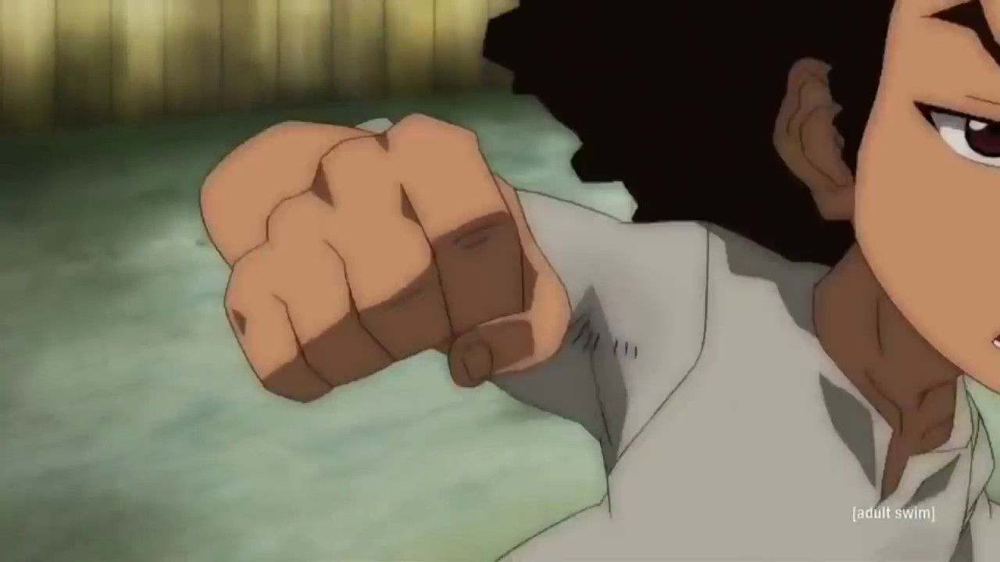

Poesi

Poesi är en konstform som uttrycker känslor och idéer genom poetiska språkliga uttryck. Det är ett sätt att utforska och uttrycka sinnet och fantasin genom ord och rytm.
Poesi har en lång historia och har använts av författare och poeter över hela världen för att förmedla djupa känslor, skapa bilder i läsarens sinne och utmana tankarna. Det kan vara en kraftfull form av självuttryck och ett sätt att kommunicera och beröra människor på ett djupare plan.
Boxning

Boxning är en kampsport där två deltagare möts i en fyrkantig ring och använder sina händer för att landa slag på motståndaren. Det kräver styrka, snabbhet, teknik och strategi.
Boxning har funnits i århundraden och har utvecklats till en populär sport runt om i världen. Utövare använder olika slagtekniker, fotarbete och försvarstaktiker för att dominera i ringen och besegra sina motståndare. Det är en fysiskt krävande sport som kräver uthållighet, disciplin och mental styrka.
Utöver att vara en sport kan boxning också vara en träningsform som hjälper till att förbättra konditionen, koordinationen och självförtroendet. Det kan vara en utmanande men också givande hobby som främjar hälsa och välbefinnande.